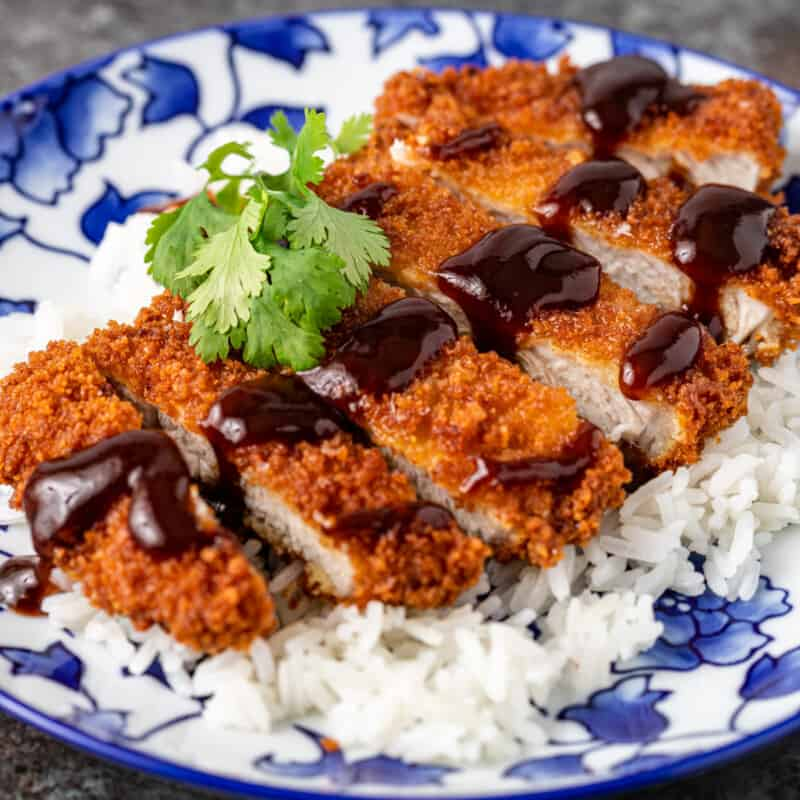

Home

Description
Tonkatsu is Japanese for "pork cutlet" and as the name implies it involves a pork chop. Tonkatsu is cooked by breading a decently thick pork chop in
panko and deep frying until brown. This results in a juicy and cripy cut of delicious pork. One could also substitue the pork chop for chicken breast, or
your preffered cut of beef. When one replaces the pork the name changes to Gyukatsu and Yakikatsu, for beed and chicken respectively.
Tonkatsu is often accompanied by what I think of as Japanese BBQ sauce, a thick condiment similar to British or Irish brown sauce. The actual ingredients
very from brand to brand, however it is worcestshire based and characterized by a sweet, tangy and rich taste reminiscent of A1. The recipe I will
include below is very simple and involves only a handful of ingredients, mixed and set aside for a half hour.
Recipe
Serves 2
Ingredients
Tonkatsu
- 2 boneless pork chops (3/4-1 inch)
- 1 cup panko breadcrumbs
- 1/2 cup AP flour
- 1 egg
- salt & pepper
- oil for frying
Katsu Sauce
- .5 cups ketchup
- 2 tablespoons soy sauce
- 1 tablespoon brown sugar
- 1 tablespoon mirin
- 1.5 teaspoons worcestshire
- 1 teaspoon ginger, minced
- 1 clove garlic, minced
Directions
Tonkatsu
- Start by prepping the pork. Score the white tissue on the outer edge to avoid curling. Flatten to 3/4-1 inch thickness
- Mix a small amount of flour into your egg wash and stir. This will create a crispier, thicker crust. Season chops. Now dredge chops in panko/flour mixture.
- Heat enough oil to deep fry in a pan. Heat to around 340 degrees in freedom units. Deep fry for 5-6 minutes on each side.
- Rest on a rack or paper towels to dry. Slice and serve with your choice of side.
Note: In japan katsu is commonly served with cabbage or rice and curry for a side. I prefer curry.
Katsu Sauce
- Stir all ingredients together in a bowl. Make sure to mix thoroughly.
- Let rest for at least 30 minutes in the fridge.
Home